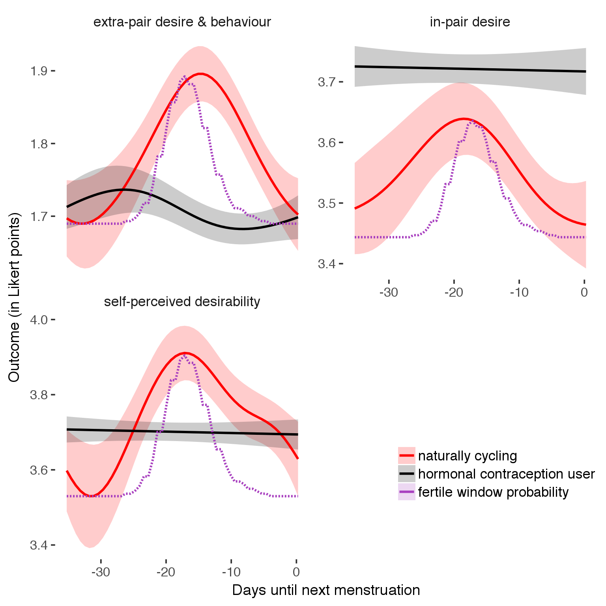

Cycling women (not on hormonal birth control)
Women on hormonal birth control
library(knitr)
opts_chunk$set(fig.width = 8, fig.height = 8, cache = T, warning = T, message = F, cache = F)source("0_helpers.R")
load("full_data.rdata")
diary = diary %>%
mutate(
included = included_all,
fertile = if_else(is.na(prc_stirn_b_squished), prc_stirn_b_backward_inferred, prc_stirn_b_squished)
) %>% group_by(person) %>%
mutate(
fertile_mean = mean(fertile, na.rm = T)
) %>% filter(minimum_cycle_length_diary <= 36, minimum_cycle_length_diary > 20) %>% mutate(fertile=prc_stirn_b)
opts_chunk$set(warning = F)
library(Cairo)
opts_chunk$set(dev = "CairoPNG")
library(ggplot2)
# form a subset and run the model without the hormonal contraception and the fertility predictors
tmp = diary %>%
filter(!is.na(fertile), !is.na(included),
RCD > -1 * minimum_cycle_length_diary, RCD > -40) %>%
filter(!is.na(RCD))
rcd_min = min(tmp$RCD)
tmp$real = FALSE
tmp_before = tmp
tmp_before$RCD = tmp_before$RCD + min(tmp$RCD) - 1
tmp_after = tmp
tmp_after$RCD = tmp_after$RCD - min(tmp$RCD) + 1
tmp$real = TRUE
tmp = bind_rows(tmp_before %>% filter(RCD > rcd_min - 11), tmp, tmp_after %>% filter(RCD < 11))As before, but without partialling anything out.
extra_pair = ggplot(tmp,aes_string(x = "RCD", y = "extra_pair", colour = "included")) +
stat_smooth(geom = 'smooth',size = 0.8, fill = "#9ECAE1", method = 'gam', formula = y ~ s(x))
in_pair_desire = ggplot(tmp,aes_string(x = "RCD", y = "in_pair_desire", colour = "included")) +
stat_smooth(geom = 'smooth',size = 0.8, fill = "#9ECAE1", method = 'gam', formula = y ~ s(x))
desirability_1 = ggplot(tmp,aes_string(x = "RCD", y = "desirability_1", colour = "included")) +
stat_smooth(geom = 'smooth',size = 0.8, fill = "#9ECAE1", method = 'gam', formula = y ~ s(x))
trend_data = bind_rows(
extra_pair = ggplot_build(extra_pair)$data[[1]],
in_pair_desire = ggplot_build(in_pair_desire)$data[[1]],
desirability_1 = ggplot_build(desirability_1)$data[[1]],
.id = "outcome"
)
trend_data$RCD = round(trend_data$x)
trend_data = left_join(trend_data, tmp %>% select(real, RCD,fertile) %>% unique(), by = "RCD")
trend_data = bind_rows(trend_data %>%
filter(group == 1) %>%
group_by(outcome) %>%
mutate(
group = 3,
ymin = NA,
ymax = NA,
y = ( ( (fertile - 0.01)/0.58) * (max(y)-min(y) ) ) + min(y) ),
trend_data) %>%
filter(real == TRUE)
trend_data$outcome_label = recode(str_replace_all(str_replace_all(str_replace_all(trend_data$outcome, "_", " "), " pair", "-pair"), " 1", ""),
"desirability" = "self-perceived desirability",
"NARQ admiration" = "narcissistic admiration",
"NARQ rivalry" = "narcissistic rivalry",
"extra-pair" = "extra-pair desire & behaviour",
"had sexual intercourse" = "sexual intercourse")
theme_set(theme_tufte(base_size = 16, base_family='Helvetica'))
plot1b = ggplot(trend_data) +
geom_ribbon(aes(x = x, ymin = ymin, ymax = ymax, fill = factor(group)), alpha = 0.2) +
geom_line(aes(x = x, y = y, colour = factor(group), linetype = factor(group)), size = 0.8, stat = "identity") +
scale_x_continuous("Days until next menstruation") +
ylab("Outcome (in Likert points)") +
scale_linetype_manual(values = c("2" = "solid", "1" = "solid", "3" = "dashed"), guide = F) +
scale_color_manual("", values = c("2" = "black", "1" = "red", "3" = "#a83fbf"), labels = c("2"="hormonal contraception user","1"="naturally cycling", "3" = "fertile window probability")) +
scale_fill_manual("", values = c("2" = "black", "1" = "red", "3" = "#a83fbf"), labels = c("2"="hormonal contraception user","1"="naturally cycling", "3" = "fertile window probability")) +
facet_wrap(~ outcome_label, scales = "free_y", ncol = 2) +
theme(legend.position = c(1,0.1), legend.justification = c(1,0),
axis.text = element_text(size = 12),
axis.title = element_text(size = 14))
suppressWarnings(print(plot1b))
ggsave(plot1b, filename = "_site/library/curves_paper.png", width = 8, height = 7)
ggsave(plot1b, filename = "curves_paper.pdf", width = 8, height = 7)